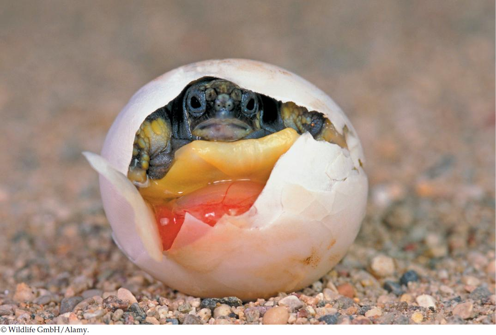

| 38 | Animal Development |
|
KEY CONCEPTS
38.1Fertilization Activates Development 38.2Cleavage Creates Building Blocks and Produces a Blastula 38.3Gastrulation Produces a Second, then a Third Germ Layer 38.4Gastrulation Sets the Stage for Organogenesis and Neurulation in Chordates 38.5Extraembryonic Membranes Protect and Nourish the Embryo 38.6Development Continues throughout Life |

Vertebrates have two lateral eyes, clearly seen as this hatchling Greek tortoise (Testudo hermanni) takes its first peek at its new environment.
|
In Homer’s Odyssey, the mythic hero Odysseus visits the island of the Cyclopes, a race of one-eyed giants. He and his men come across an enormous cave inhabited by one of these beings. After feasting on the cyclops’s stored food, they hide as the monster returns: “The cyclops…blotted out the light in the doorway. He was as tall and rugged as an alp. One huge eye glared out of the center of his forehead.”
The one-eyed monster of Greek mythology has a basis in reality: a birth defect in humans that is known as holoprosencephaly (Greek, “one forebrain”). The defect varies in severity. In its extreme form, as the name implies, the forebrain does not develop as two hemispheres but rather as one, and the face can develop with a single, centrally located eye. These extreme cases invariably lead to death of the fetus and a miscarriage. In less extreme cases, infants are born with cleft lips and cleft palates.
Several factors have been implicated in holoprosencephaly, most of them genetic. Mutations in several genes that are part of a family of signaling factors called the hedgehog family can cause this condition. The first hedgehog gene was discovered in fruit flies, where it plays a role in determining the differences in the body segments of the fly. The name arises from the fact that flies with a defect in this gene are hunched up and have a continuous covering of tiny projections, so they resemble a hedgehog. The homologous vertebrate gene, Sonic hedgehog (named for the video-game character), is critical in central nervous system development.
Environmental factors can also induce holoprosencephaly. A particularly powerful mutagen is a molecule (an alkaloid) found in certain plants, notably the corn lily (Veratrum californicum) and its relative in the eastern North America, false hellebore (V. viride). Cows and sheep grazing in fields where these plants grow have high incidences of stillbirths with extreme forms of holoprosencephaly. In fact, when the molecule was extracted and purified from corn lily, it was named cyclopamine. In humans, the ingestion early in pregnancy of certain drugs may also be associated with these birth defects. Research into how these environmental factors cause holoprosencephalic development is helping explain why Sonic hedgehog is critical in limb and nervous system development.
This chapter is contributed by Dr. Susan Douglas Hill, Michigan State University.
How does the Sonic hedgehog pathway control development of the vertebrate brain and eyes?